>
一、为什么不同平台需要完全不同的图
同一张图发在不同平台，效果可能差10倍。
X上的用户70%用暗黑模式，白底图会刺眼；小红书的用户在找种草灵感，封面决定点不点进去；公众号用户打开文章时第一眼看到头图，意境感比信息量重要；电商用户在看产品细节，任何模糊都会导致跳出。
每个平台的用户习惯、浏览场景、算法偏好都不一样，所以作图策略必须分开。
这篇合集覆盖10个常见场景，每个场景给出：
二、X/Twitter：被算法偏爱的图长什么样
X的用户70%使用暗黑模式，而且X的信息流是快速划动的。你的图必须在0.5秒内抓住注意力，同时在缩略图尺寸下依然清晰可读。
2.1 这个场景适合什么图
X适合横版信息图（16:9或2:1）、观点总结图、数据对比图、教程封面图。不适合竖版长图、复杂海报、纯产品展示。
真实热门图参考
X上高转发的图通常是：暗色背景（适配暗黑模式）、1-3个核心信息点、大号数字或短句、极简图标、扁平设计无渐变、在手机上缩略图也能看清主要文字。
2.2 具体怎么做
提示词模板：
请为我的文章生成一张高级感 X/Twitter 推文封面图。 【文章标题】： 填入你的文章标题 【文章主题/核心内容】： 填入你的文章内容，或者用 3-5 句话概括这篇文章讲什么 【目标风格】： 高级、简约、现代、像 X 上热门文章封面图，带教程感/专栏感/官方感，不要廉价海报感。 【画面要求】： 横版 5:2 比例，深色背景，适合 X 暗黑模式。 左侧放超大号主标题，标题要清晰、有冲击力，手机缩略图也能看清。 右侧根据文章主题生成一个视觉主体，可以是 UI 面板、数据图表、产品界面、人物剪影、工具图标、流程卡片、科技元素等。 画面中加入和文章内容相关的图标、关键词标签、信息卡片、步骤模块，让画面丰富但不杂乱。 【文字排版】： 主标题使用大号粗体中文字体。 从文章标题中自动提取 1-2 个关键词，用蓝色/紫色/金色渐变高亮。 可以加入一个小标签，例如： "X 文章封面" "实战教程" "Prompt 模板" "AI 工具指南" 根据文章内容自动选择最合适的标签。 【视觉元素】： 根据文章主题自动生成相关元素： 如果是 AI / Prompt 类文章：加入提示词输入框、聊天气泡、鼠标指针、AI 图标、UI 卡片。 如果是 Web3 / 加密类文章：加入 K 线、链上数据、钱包、代币图标、数据面板。 如果是电商类文章：加入产品卡片、价格标签、购物车、数据看板、商品展示框。 如果是教程类文章：加入步骤卡片、流程线、编号模块、工具图标。 如果是个人 IP 类文章：加入头像区域、专栏卡片、社媒界面、个人品牌标签。 【整体设计】： 深黑色/深蓝色/炭灰色渐变背景。 加入细微网格线、柔和光晕、玻璃拟态 UI 卡片、霓虹描边、细节线条、虚线连接。 整体要有层次感、空间感、专业感。 画面丰富，有图标、有文字、有主题、有视觉焦点，但保持干净高级。 不要卡通，不要廉价促销风，不要杂乱，不要土味配色，不要过多小字。 【输出要求】： 生成一张 5:2 横版封面图。 文字必须清晰可读，中文不要乱码。 高级社交媒体封面，premium editorial design, dark futuristic UI, glassmorphism, clean typography, high contrast, polished, modern, professional.
微调建议：
三、小红书：种草封面的流量密码
小红书的用户是"主动搜索"型，封面图决定笔记的点击率。3:4竖图、明亮暖色调、顶部大字标题是小红书的经典公式。
3.1 这个场景适合什么图
产品推荐、教程分享、穿搭/美妆/生活方式、干货总结。封面必须让人"想点进去看详情"。
真实热门图参考
小红书热门封面通常是：3:4竖图、粉色/奶油色/暖白色调、产品或主题元素在画面中央、顶部或中间有大号手写体或可爱字体标题、周围有花瓣/珍珠/星星等装饰元素、整体光线柔和偏过曝、像韩系杂志内页。
3.2 具体怎么做
提示词模板：
一张小红书风格的竖版封面图。 比例3:4。 柔和的粉色和奶油色调。 画面中央是一个（护肤品瓶子），周围散落着（花瓣和珍珠）。 顶部用大号可爱手写风格字体写着（"熬夜党必备神器"）。 光线温暖、梦幻、稍微过曝，营造出柔和氛围。 韩系美妆杂志内页风格。 整体 aesthetic 感强，让人想点进去看详情。
微调建议：
四、公众号：文章头图的意境感
公众号文章头图是宽横幅，打开文章时第一眼看到。它不需要塞满信息，而是营造氛围，让用户觉得"这篇文章应该不错"。
4.1 这个场景适合什么图
文章头图、栏目封面、专题banner。重点是意境、质感，不是信息量。
真实热门图参考
高质感公众号头图通常是：16:9宽图
4.2 具体怎么做
提示词模板：
一张高级微信公众号文章封面图，横版16:9，主题是"【师妹带你玩转GPT"】。 整体风格：高级、简约、科技感、公众号爆款文章封面、官方教程封面质感，深色背景，黑绿色/墨绿色渐变氛围，干净但画面丰富，有强烈点击欲，不廉价，不花哨。 画面布局： 左侧是大标题，中文大字排版： 【"师妹带你"】 【"玩转GPT"】 其中"GPT"使用更大的字体，做成薄荷绿/青绿色渐变高亮，文字要清晰、粗体、有高级感。 标题下方加一条细长的绿色光线弧形装饰，提升设计感。 左上角放置 【ChatGPT 图标和文字"ChatGPT"】，图标要清晰、简洁、现代。 右侧放一个年轻【女性】侧脸半身形象，气质高级、冷静、聪明、像AI教程博主，黑色衣服，柔和侧光，真实摄影质感，不要卡通。 女性前方放一个大型3D ChatGPT图标，深色玻璃质感，边缘有绿色发光效果。 周围加入少量半透明玻璃拟态信息卡片，卡片上有简短中文标签： 【"创意生成"】 【"高效写作"】 【"代码助手"】 每个卡片配极简线性小图标，比如灯泡、文档、代码符号。 加入细微的虚线连接、圆形光环、AI界面元素，营造智能工具感。 色彩：深黑、墨绿、薄荷绿、白色，少量青绿色霓虹光。 字体：现代无衬线字体，大标题粗体，排版高级，适合手机端缩略图也能看清。 画面要有留白、有层次、有高级光影，不要杂乱。 无水印，无多余文字，无乱码。
五、电商：白底产品图与场景图
电商图的核心是"信任"和"代入"。白底图让用户看清产品细节，场景图让用户想象自己使用的情景。
5.1 白底产品图
真实热门图参考：
亚马逊/淘宝高转化主图：纯白背景、产品居中、30度角展示、柔和左侧光、右侧淡淡阴影、无文字无水印、看起来像专业摄影棚出品。
提示词模板：
一张专业电商产品图。 纯白色背景。 一个（不锈钢保温杯）居中放置，稍微倾斜30度角，展示产品深度。 左侧柔和工作室灯光，右侧有自然的淡淡阴影。 干净、商业感、高端目录风格。 没有任何文字、没有任何道具、没有任何水印。 焦点锐利，8K品质感。 比例1:1。
产品详情图提示词模板：
一张高级感电商产品详情页海报，主题是"不锈钢保温杯"，竖版构图，比例4:5。 整体风格要像高端品牌电商详情页，简约、干净、精致、轻奢、有质感，版式清晰，图文并茂，适合电商展示。 主色调以白色、浅灰色、香槟金为主，画面高级，不廉价，不杂乱，不要淘宝低端风。 画面内容分为多个信息模块，排版像完整的产品详情页： 首屏主视觉模块 左侧是大标题和卖点文案，右侧是产品主图。 标题写：不锈钢保温杯 副标题写：简约设计・双层锁温・防漏便携 上方小字写：精致生活・品质之选 正文简短说明： 精选不锈钢材质，双层真空锁温，长效保温保冷，随行好伴侣。 右侧展示一个高端不锈钢保温杯，银色拉丝金属杯身，浅灰色杯盖，杯盖带按压锁扣结构，产品稍微倾斜，具有立体感，质感高级，像专业棚拍图。 背景纯净白色，左侧柔和工作室灯光，右侧自然淡阴影，焦点锐利，8K质感。 功能卖点图标模块 使用4个高级极简线性图标，搭配短文案，排版整齐，图标为香槟金色。 四个卖点分别是： - 双层锁温：长效保温保冷 - 防漏杯盖：密封不漏水 - 一键开合：便捷单手操作 - 细腻杯身：拉丝质感，耐磨耐用 细节展示模块 下方做3个细节特写小图，排成一行，每个小图下方带标题和简短说明。 第一个特写：杯盖锁扣细节，标题：一键锁扣设计，说明：轻松开合，单手操作更便捷 第二个特写：拉丝杯身质感，标题：细腻拉丝杯身，说明：质感细腻，耐磨耐用，易于清洁 第三个特写：杯底细节，标题：防滑静音杯底，说明：稳固放置，静音防滑不易倾倒 场景氛围模块 底部增加一个生活方式场景模块，左侧文案，右侧产品站立展示。 大标题写：随行相伴 副标题写：每一刻都从容 正文写： 无论通勤、办公还是出行，一杯好水，陪伴你的品质生活。 下方配3个小图标和文字： - 通勤办公 - 差旅出行 - 车载随行 右侧场景为极简高级生活方式空间，浅色桌面，柔和窗景背景，产品直立摆放，氛围干净高级。 底部信任背书模块 底部做3个横向卖点标签，配小图标： - 精选304不锈钢：安全材质，安心饮水 - 匠心工艺 品质保证：细节之处，见证品质 - 精美包装 送礼优选：自用送礼，两相宜 整体要求： 排版要像高级品牌电商详情页，图文结合，留白舒服，层次清晰，文字规整，不能出框，不能拥挤。 字体风格高级，中文排版精致。 视觉重点突出产品，同时兼顾信息讲解。 不要低端促销感，不要过度花哨，不要杂色，不要水印。 整体效果要像高端品牌旗舰店详情页首屏+详情模块整合图。
精简版提示词（提示词太长模型会跑偏时用）：
生成一张高级电商产品详情页，主题是不锈钢保温杯，竖版4:5。整体风格简约轻奢，白色、浅灰、香槟金配色，高端品牌电商详情页质感。右上为银色不锈钢保温杯主图，杯身拉丝金属质感，浅灰杯盖，带按压锁扣，纯白背景，柔和棚拍灯光，右侧自然阴影，清晰锐利。左侧为标题文案："不锈钢保温杯""简约设计・双层锁温・防漏便携"。中间加入4个功能图标模块：双层锁温、防漏杯盖、一键开合、细腻杯身。下方加入3个产品细节特写模块：锁扣设计、拉丝杯身、防滑杯底。底部加入生活方式场景模块，展示产品在浅色桌面和柔和窗景中直立摆放，并配文案"随行相伴，每一刻都从容"。整体排版清晰，图文并茂，高级干净，像品牌旗舰店详情页，不要廉价感，不要杂乱，不要水印。
更简单的方法：
直接把你的产品图喂给GPT，告诉它"给我生成一张'这张'图片的产品详情图"，现在的GPT非常聪明，你只要告诉它你的核心要求，它基本都能满足你。
5.2 生活方式场景图
真实热门图参考：
详情页高停留场景图：自然光（窗边上午光线）、产品在真实使用场景中、有生活气息元素（咖啡杯、书本、绿植）、暖色调、浅景深、Instagram aesthetic风格。
提示词模板：
一张高级电商生活方式产品图，主角是一副【白色无线蓝牙耳机和同色充电仓】，放在大理石窗台上。耳机和充电仓作为绝对视觉中心，占据画面前景较大比例，产品清晰锐利、立体感强、边缘精致，表面有细腻高光和柔和反射，呈现高级哑光质感。 清晨阳光从窗外洒入，温暖金色调，背景高光轻微过曝，营造高级、温馨、有向往感的生活氛围。背景中虚化出现一个陶瓷咖啡杯和一本打开的书，作为生活化场景元素，但不能抢产品主体。左侧可以有少量绿色植物叶片增加自然感。 浅景深，自然背景虚化，产品摄影逻辑，商业广告构图，干净、有质感、精致、高端电商大片风格。大理石表面有柔和阴影和反射，让耳机更立体。画面真实、自然、不廉价、不过度摆拍。 无文字、无水印、无杂乱道具。 比例 4:5。
5.3 促销海报
真实热门图参考：
大促海报：红/橙/金高饱和背景、超大折扣数字占画面40%、紧迫感元素（闪电、火焰、倒计时条）、信息层级清晰（折扣数字 > 产品图 > 说明文字）。
提示词模板：
一张高级感很强的电商促销海报，整体采用深红、酒红、黑红渐变的奢华配色，辅以鎏金高光点缀，画面精致、克制、贵气，不要廉价火焰爆炸感，不要俗气背景。 海报中央是超大号立体促销数字文字 【"5折"】，字体为高级3D立体字，主体是象牙白/香槟白材质，边缘带细致的鎏金描边，有明显但干净的立体厚度、柔和阴影、金属反光，看起来像高端商业广告。 下方放一个精致的小型高级铭牌，写着 【"限时3天"】，文字为金色，铭牌为深红色搭配金边。 背景采用高级红色空间感设计，可以有柔和光晕、暗纹渐变、细微粒子、优雅环形光线、轻微体积光，整体干净利落、层次分明，不杂乱。 画面两侧和边缘可加入少量金属线条、微光装饰、轻奢框线，增强质感。 整体风格是高端品牌促销视觉、轻奢、电商大促主KV、官方海报质感，强调高级、精致、有冲击力，但不过度花哨。 不要卡通感，不要低端火焰，不要闪电，不要廉价特效，不要杂乱装饰。 构图居中，重点突出"5折"，适合电商首页banner。 比例16:9。
六、教程与知识：分步骤图解
教程图的核心是"清晰"和"流程感"。用户跟着图操作，任何歧义都会导致困惑。
6.1 这个场景适合什么图
软件操作步骤、使用指南、流程教学、概念拆解。适合公众号、小红书、X线程。
6.2 具体怎么做
提示词模板：
一张现代扁平化教程步骤信息图，比例16:9。 浅灰色干净背景，整体像软件帮助中心/说明文档里的教程图，简洁、专业、清晰。 顶部居中放一个小的绿色书本/教程图标，旁边写大标题「使用教程」，下方一行小字「只需四步，轻松完成操作」。 画面中间横向排列4个白色圆角卡片，每个卡片顶部有一个绿色圆形编号徽章，里面是白色数字：1、2、3、4。 4个步骤从左到右排列，步骤之间用绿色弯曲箭头连接。 每个卡片内部包含一个浅绿色圆形底和一个极简2D图标： 第1步：下载图标，主标题「下载」，小字「下载应用」 第2步：密码锁图标，主标题「密码」，小字「设置密码」 第3步：云备份图标，主标题「备份」，小字「完成备份」 第4步：确认勾选图标，主标题「确认」，小字「确认提交」 卡片底部有一条细绿色强调线。 底部居中放一个浅绿色提示条，左边是绿色盾牌勾选图标，文字写： 「请按照以上步骤依次操作，确保数据安全与操作成功。」 视觉风格：纯几何矢量感，扁平化设计，教程说明风格，UI帮助文档风格，干净留白，绿色为主色，深灰色文字，图标线条清晰统一，不要写实纹理，不要3D，不要复杂装饰，不要水印。
七、商业或者教程PPT封面
7.1 这个场景适合什么图
适合课程讲解页、知识付费封面、公众号长图封面使用。
7.2 具体怎么做
提示词模板：
请根据我提供的主题和原文内容，自动生成一张【高级竖版PPT信息导图】。 你不需要逐字照搬原文，而是要帮我自动提炼重点、归纳结构、拆分模块，并设计成一张适合讲解的高颜值PPT导图。 主题： 【在这里填写你的主题】 原文内容： 【在这里粘贴你的文章、课程大纲、产品介绍、项目说明或任意内容】 生成要求： 1. 自动理解主题 根据我提供的内容，自动判断这张图最适合做成： 知识导图 / 平台合集 / 方法论拆解 / 产品介绍 / 流程说明 / 对比分析 / 教程步骤 / 活动说明 / 课程封面。 选择最适合的导图结构，不要机械套模板。 2. 自动提炼模块 从原文中自动提炼 6-10 个核心模块。 每个模块需要包含： - 简短标题 - 一句话说明 - 对应图标或视觉符号 如果内容里出现平台、品牌、工具、软件、社交媒体、电商平台，请自动配上对应 LOGO 或高度相似的识别图标。 例如：X、小红书、微信、公众号、PPT、电商、AI工具、社交平台等。 3. 版式要求 做成竖版PPT信息导图，比例 3:4 或 4:5。 顶部是大标题和副标题。 中间是核心模块卡片区。 底部是总结区或亮点区。 整体要像一页专业课程PPT、知识付费封面、AI工具教程封面、公众号长图封面。 让人一眼看出这张图在讲什么。 4. 视觉风格 高级、精美、现代、干净、有设计感。 参考 2026 年流行的 AI SaaS 官网、Keynote 发布会、知识付费课程封面、高级信息图风格。 使用： - 浅色高级背景 - 蓝紫渐变光感 - 玻璃拟态卡片 - 圆角模块 - 柔和阴影 - 精致图标 - 统一色彩体系 - 清晰层级排版 不要廉价感，不要杂乱，不要像普通海报，不要文字堆满。 5. 文字要求 中文排版必须清晰。 所有文字不能出框、不能重叠、不能裁切、不能变形。 每个模块文字尽量短，适合PPT展示。 标题要醒目，说明文字要简洁。 不要生成大段文章。 6. 底部总结 请根据原文自动生成一句有总结力的金句，放在底部。 这句话要简洁、有传播感，适合做课程封面或文章配图。 7. 画质要求 高清、精致、8K质感、商业级PPT视觉。 整体图文并茂，信息清楚，视觉高级。
八、个人IP：头像与系列形象
个人IP图的核心是"识别度"和"一致性"。系列图如果风格漂移，粉丝就认不出来。
8.1 这个场景适合什么图
社交媒体封面、栏目封面、品牌宣传封面、系列内容封面。需要风格高度统一。
真实热门图参考
高识别度IP形象：用统一的一张人物IP形象（可以是真人也可以是动漫），用来融合进文章素材里打造图片。
8.2 具体怎么做
提示词模板：
上传一张我的头像，把它做成一张高级个人IP风格的X推文封面图，比例5:2。 我的IP名是：【填写你的名字/账号名】 文章标题是：【填写你的文章标题】 文章简介是：【用1-2句话填写文章主要内容】【也可以直接塞全文】 画面要求： 整体要像高级专栏封面、知识博主文章头图、官方教程Banner。 使用深色背景，黑金质感，适合X暗黑模式。 头像人物放在画面一侧，作为个人IP视觉核心，要高级、精致、有博主感。 另一侧放文章标题和简介，排版要大气、清晰、有层次。 画面中加入一个精致的X logo。 根据文章主题加入少量相关图标或元素。 整体要高级、简约、干净、有点击欲，不要廉价海报感，不要杂乱，不要太多字。
系列图锁风格技巧：
生成第一张后，后续都上传这张参考图，并加一句：
九、思维导图与知识图谱
知识图谱的核心是"结构化"和"一眼看懂关系"。中心主题放射出去，不同分支用颜色区分。
9.1 这个场景适合什么图
概念梳理、行业地图、决策框架、知识总结。适合公众号长图、X线程封面、课程讲义。
真实热门图参考
高收藏知识图：白色背景、中心一个主节点、5-8个分支用不同颜色、每个分支有2-3个子节点+小图标、分支之间不交叉、整体像海报一样有设计感。
9.2 具体怎么做
提示词模板：
一张思维导图信息图。 白色背景。 中心节点写着（"Web3生态"），有5个主分支向外辐射。 分支1用蓝色代表（DeFi），分支2绿色代表（NFT），分支3橙色代表（DAO），分支4紫色代表（基础设施），分支5红色代表（游戏）。 每个主分支下有2-3个小节点，带有小图标。 连接线略带手绘感，不完全笔直。 教育海报风格，清晰、有条理、有色彩区分。 比例16:9。
十、对比图：Before/After
对比图的核心是"反差"。左右或上下强烈对比，让用户一眼看到变化。
10.1 这个场景适合什么图
效果展示、策略对比、改造前后、状态变化。适合小红书、X。
真实热门图参考
高互动对比图：左右分栏、中间有粗分割线或VS字样、Before用灰暗/冷色调/混乱构图、After用明亮/暖色调/有序构图、关键差异用箭头或高亮框标出。
10.2 具体怎么做
提示词模板：
一张Before和After对比图。 正中间有一条粗白色竖线分隔左右。 左边写着（"Before"），用灰暗的冷色调：混乱的红色下跌K线，杂乱的布局。 右边写着（"After"），用明亮的暖色调：整齐的绿色上涨K线，清晰的入场出场标记。 左右两侧形成强烈的视觉反差。 深色背景，K线蜡烛图风格。 比例16:9。
十一、2026年通用高级技巧
技巧1：系列图锁风格
做系列图（比如连续7天的内容封面）时，第一张生成后保存，后续上传这张参考图并写：
技巧2：局部编辑代替重跑
大图结构OK但某个数字或图标要改时，用局部编辑功能圈选该区域，写"把这里的数字改成500"或"把这个图标换成绿色版本"。
技巧3：加缺陷降低AI感
在提示词末尾加：
完美对称=AI感，轻微缺陷=人味。
技巧4：比例锁死在提示词里
不要生成后再裁剪：
技巧5：文字渲染的边界
十二、避坑清单
本文基于2026年最新图像生成模型能力与X/Twitter、小红书、公众号、电商平台实战观察整理。所有提示词均为中文直出模板，复制后填入括号内的具体内容即可使用。
这个工作流适合谁
核心心法： 不同平台的用户习惯和算法偏好决定了作图策略。模板可以复制，但平台思维才是底层能力。
>
📸 示例效果图

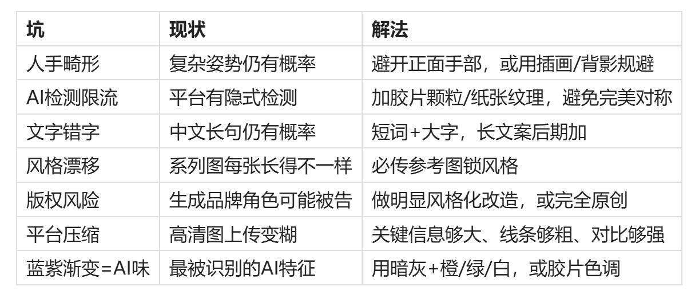
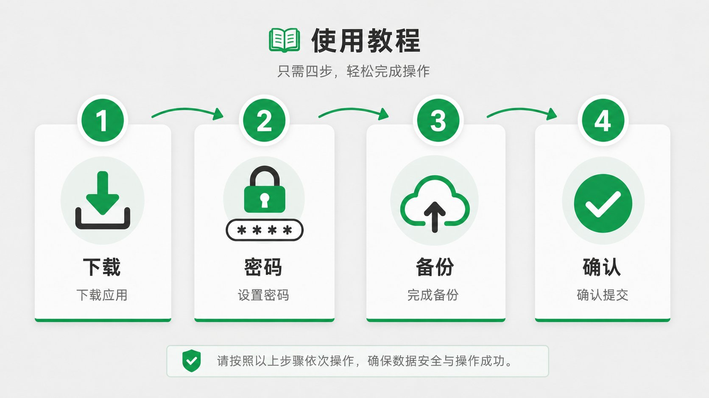
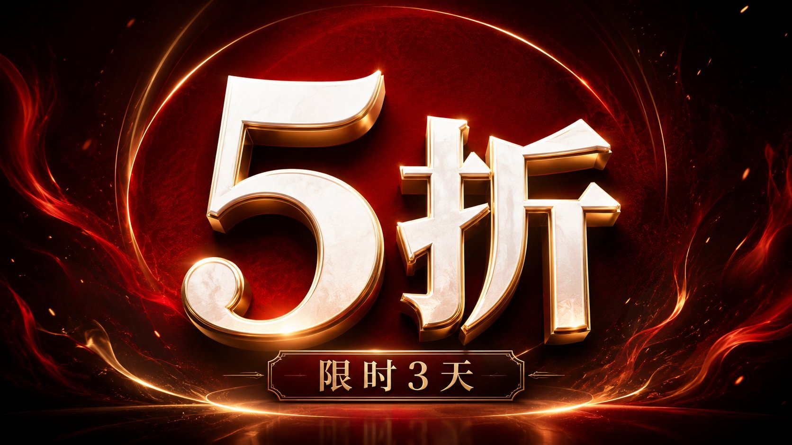
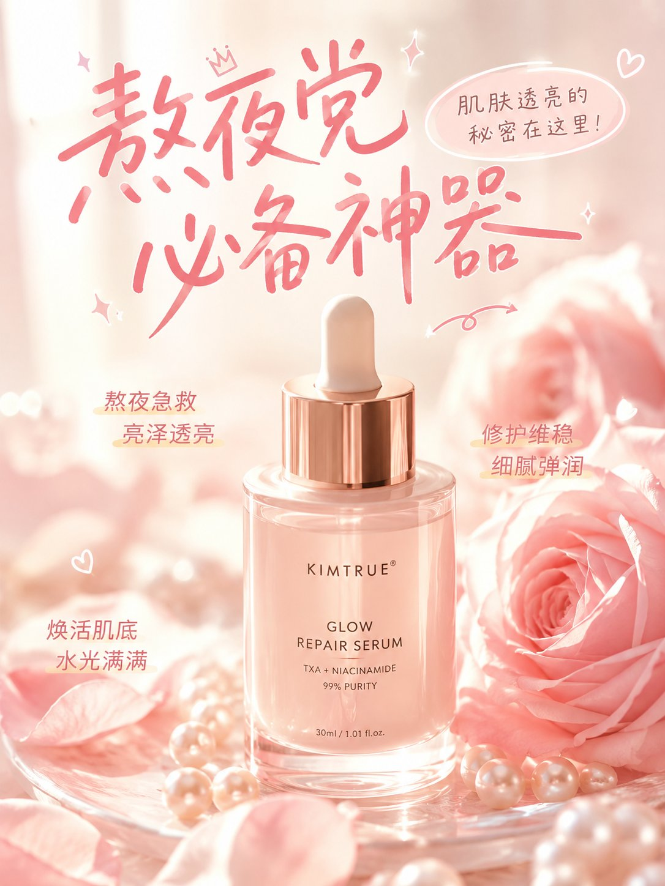
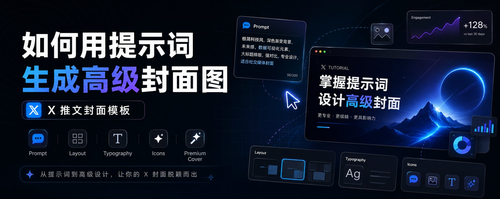
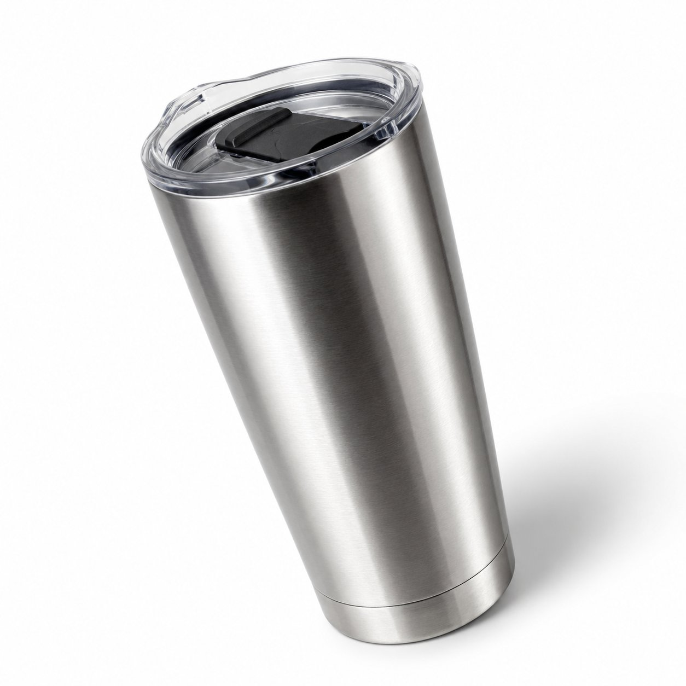
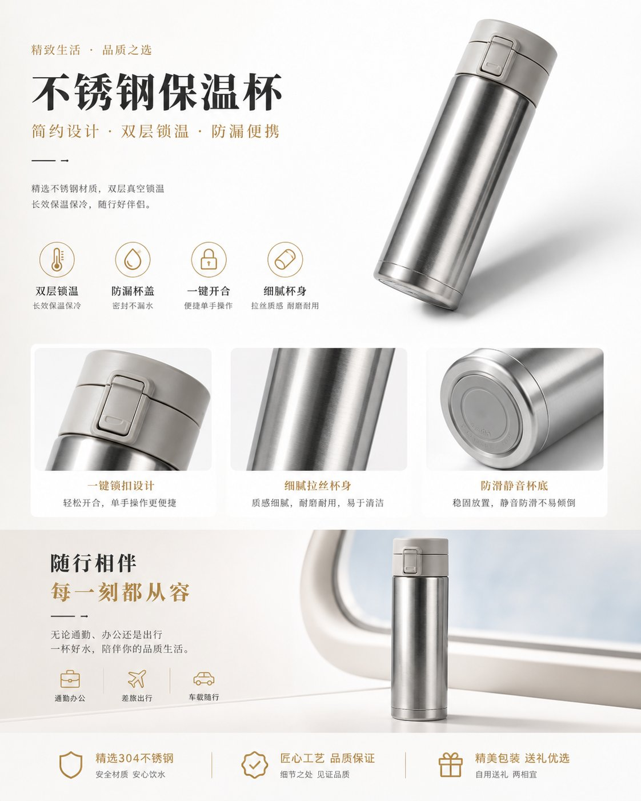
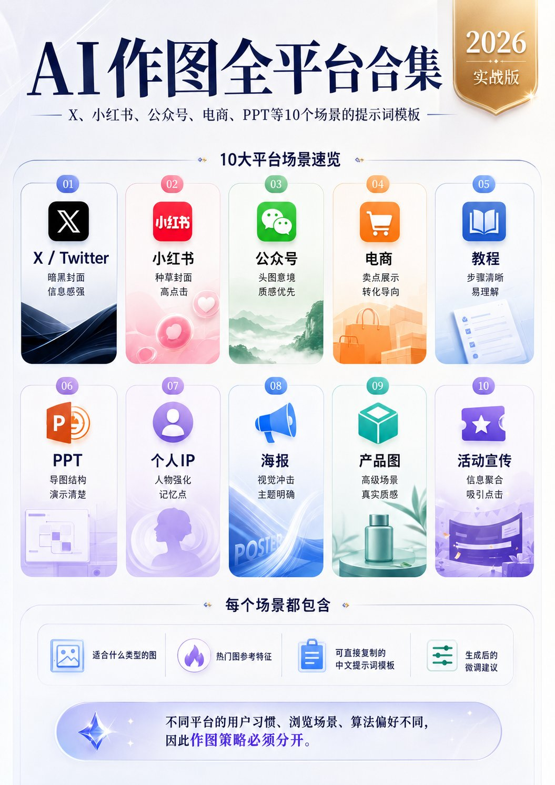

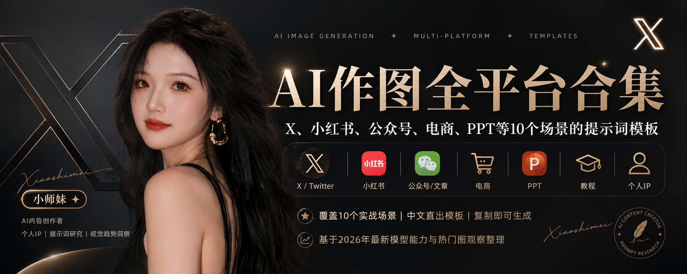
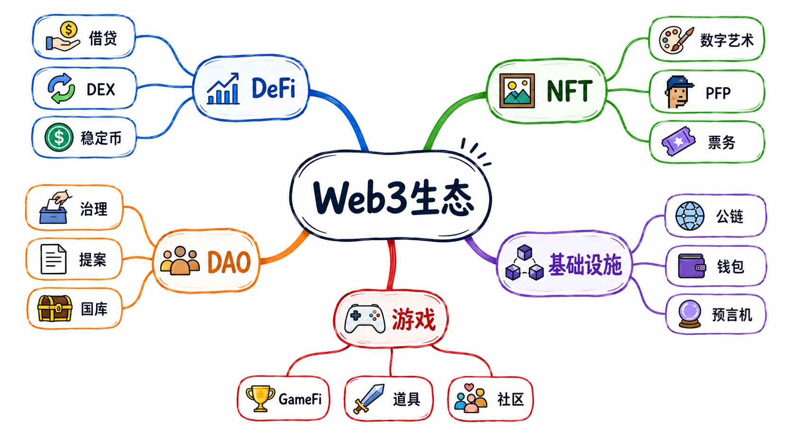
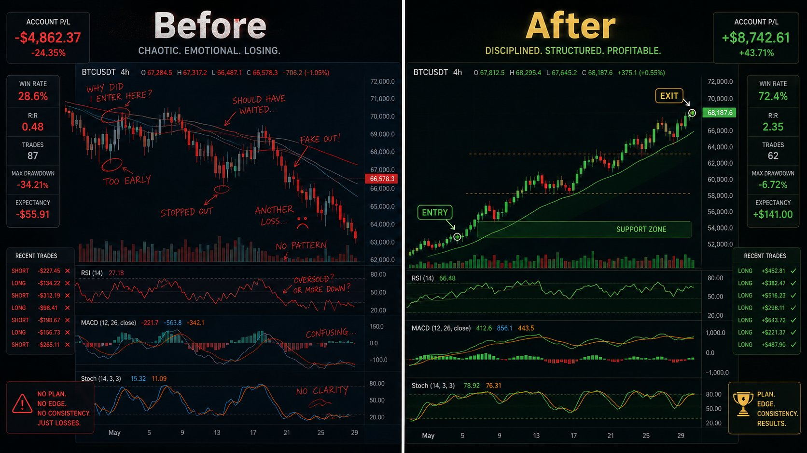
>
一、なぜプラットフォームごとにまったく異なる画像が必要なのか
同じ画像を異なるプラットフォームに投稿しても、効果が10倍も変わることがあります。
Xのユーザーの70％はダークモードを使用しているため、白背景の画像は目に刺さるように感じられます。RedNote（小红书）のユーザーは「買いたくなる」インスピレーションを探しており、カバー画像でクリックするかどうかが決まります。WeChat公式アカウントの読者は記事を開いた瞬間に最初にアイキャッチ画像を目にしますので、情報量よりも雰囲気の方が重要です。ECユーザーは商品の詳細を確認しており、ぼやけた画像はすぐに離脱につながります。
二、X/Twitter：アルゴリズムに好まれる画像
Xのユーザーの70％はダークモードを使用しています。あなたの画像は0.5秒以内に注目を奪わなければなりません。
Promptテンプレート：
私の記事のために、高級感のあるX/Twitter投稿カバー画像を生成してください。 【記事タイトル】：あなたの記事タイトルを入力 【記事テーマ／核心内容】：3〜5文で要約 【目標スタイル】：高級、シンプル、モダン 横型5:2の比率、暗めの背景。左側に大きなメインタイトル、右側に視覚的な主体。 漆黒／濃紺／チャコールグレーのグラデーション背景、グリッド線、ソフトな光彩、ガラスモーフィズムUIカード。 コミカルなタッチや安っぽいプロモーション風は避けてください。
微調整のアドバイス：
三、RedNote（小红书）：草を生やすカバー画像
3:4の縦型画像、明るく暖色系のトーン、上部に大きな文字のタイトル。
Promptテンプレート：
RedNote（小红书）スタイルの縦型カバー画像を生成してください。 比率は3:4。柔らかいピンクとクリーム系の色調。 画面中央にスキンケアのボトルを配置し、周囲に花びらとパールを散りばめてください。 上部に大きく可愛らしい手書き風フォントで（「夜更かし族の必須アイテム」）と記載。 光は暖かく、夢幻的で、やや露出オーバー気味に。韓国系コスメ雑誌の内ページ風で。
四、WeChat公式アカウント：記事アイキャッチ画像
16:9のワイド横型バナー。情報量よりも雰囲気が重要です。
五、EC：白背景商品画像とシーン画像
白背景商品画像：
真っ白な背景、商品は中央に30度の角度で配置、左側から柔らかい光、比率1:1
ライフスタイルシーン画像：
窓辺の自然光、暖色系、浅い被写界深度、比率4:5
プロモーションポスター：
赤／ワインレッド／黒赤のグラデーション、金彩のハイライト、巨大な立体割引数字、比率16:9
六、チュートリアルと知識共有：ステップごとの図解
16:9、薄いグレーの背景、4つの角丸カードを横方向に配置、緑色の番号、緑色の矢印で接続。
七、ビジネス／チュートリアルPPTカバー
縦型3:4または4:5、青紫のグラデーション光彩、ガラスモーフィズムカード。
八、個人IP：アバターとシリーズビジュアル
暗い背景に黒と金の質感、5:2。片側にアバター、反対側にタイトルとプロフィール。
九、マインドマップと知識グラフ
白い背景、中央のノードから5〜8本のブランチが放射状に広がり、色分けされています。16:9。
十、比較画像：Before／After
左右に分割、太い白線で区切り。Before側は暗く寒色系、After側は明るく暖色系。16:9。
2026年 汎用テクニック
>
📸 サンプル画像